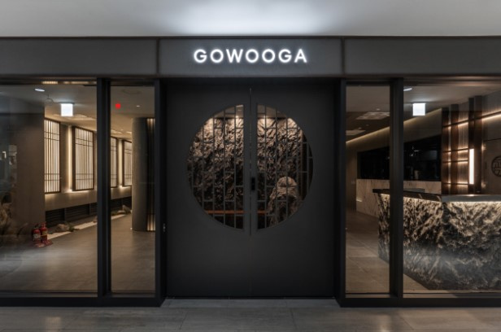

<휘재와 재이의 200일 일정>
여의도 고우가 식당
이솝 투어
여의도 한강공원 피크닉
여의도 고우가 식당

여의도 고우가 식당은 전좌석 프라이빗한 룸형식으로 되어있는 한우다이닝이야.
사랑하는 휘재와 알콩달콩 조용히 밥을 먹을 수 있는 공간인게 특징이지.
런치코스가 인기가 많아!
위치-
서울 영등포구 여의대로 24 전경련회관 지하1층 →
지도에서 확인하기
예약-
캐치테이블 예약 바로가기!